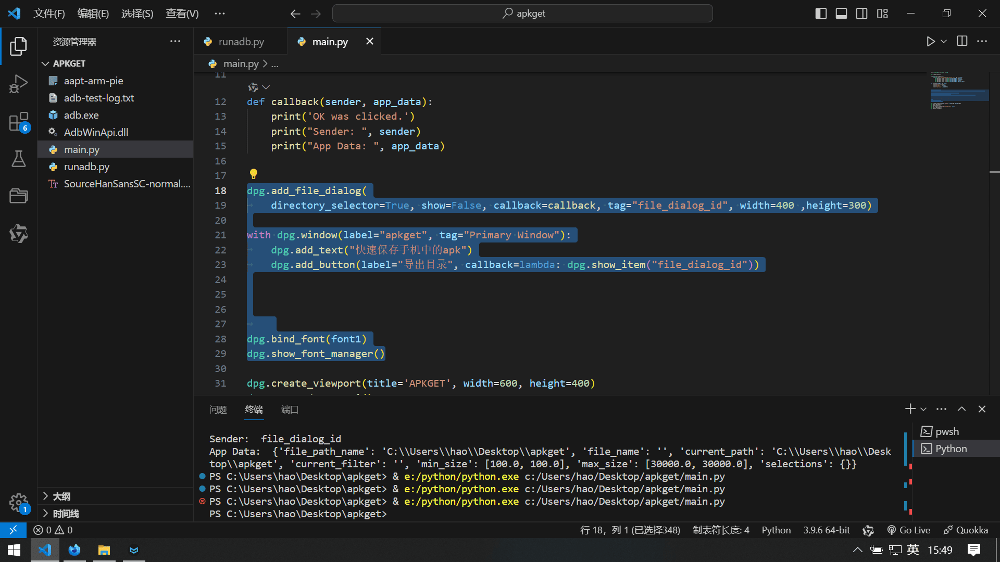
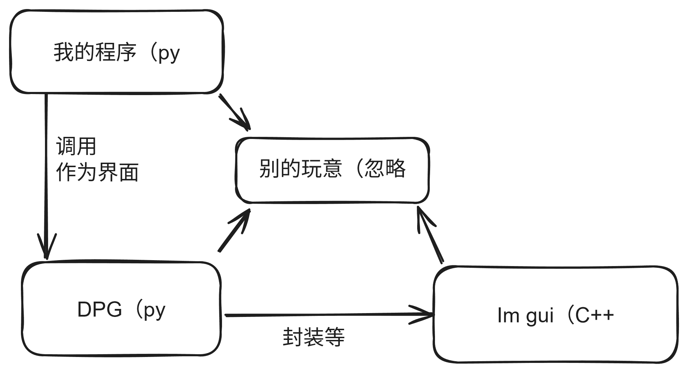
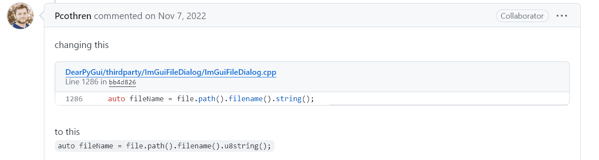

刚刚正在开发时突然出现一个问题

（图片中的已修复
使用文件/目录选择窗口的时候无法使用中文字形，而相同配置的其它窗口没有这个问题
我排查了很久，自习看过了文档，尝试过各种方式，都不行
准备去Github看看，发现还真有一样遭遇的，开发者也回复了，还标注了高优先级，但依旧Open
Chinese path support for select_directory_dialog · Issue #299 · hoffstadt/DearPyGui
但事情没那么简单
程序的调用

1
楼主很快找到了问题所在，不是我的错，不是DPG的错，是imgui的错
找是找到了，但不知道怎么改
hoffstadt: This appears to be an issue related to ImGuiFileDialog. Still looking into it more.
开发者：好像与ImGuiFileDialog有关，在进一步调查
hoffstadt: Should work in 0.7!
开发者：0.7应该就行了！
至于我，更新一下这个包就行了，太久没更新过了
确实，像上面的图那样，成了
2

0.8又没了……
至少MacOS上的韩文出了问题
这可难不倒！

一个u8string就搞定了
u8应该是指utf-8吧。这么说，没有支持utf-8？怎么会这样
3
完了？还没呢！
测试的时候发现：中文文件夹打不开、选中直接卡死闪退，以前还是正常的
已经有人帮我问了，这是第二次重新Open了（有完没完
目前还没有回复，而它连接到了另一个issues
一个叫v-ein的贡献者分析了一下：
It crashes in
mvFileDialog::getInfoDict(), in the very first call toPyDict_SetItemString(), which extracts file name fromImGuiFileDialogand feeds it intoToPyString()(and consequentlyPyUnicode_FromString()):PyDict_SetItemString(dict, "file_path_name", mvPyObject(ToPyString(_instance.GetFilePathName())));The problem is,
GetFilePathName()returns an ANSI-encoded (single-byte) string, whereasPyUnicode_FromString()expects a UTF-8 strings and treats it as such. I believe it goes over the trailing zero or something like that. Or maybe it stumps upon an assertion of some kind and crashes.I'm not sure whether ANSI-encoded strings are Windows-specific behavior or they show up on all platforms (I'd bet on Windows-specific). The bad news are, the file dialog doesn't even display such names correctly. That is, strings inside of file dialog must be UTF-8 rather than ANSI; it's a bug in
ImGuiFileDialogand not in DPG. Not sure if we can fix it inImGuiFileDialogthough becauseit's a submodule repo- scratch that, even though it's a third-party library, it's committed directly into DPG. Technically we can fix it or even updateImGuiFileDialogfrom its source repo (if it works on old ImGui, that is).
简单总结一下：由于Windows先进的向(lì)下(shǐ)兼(yí)容(líu)，路径用的是ANSI编码，所以GetFilePathName()返回的是ANSI编码字符串，而PyUnicode_FromString()期望的是UTF-8字符串，可能就在这里出问题了（但是他用了“认为”“可能”“或许”，具体原因他也不清楚）
AI烤肉：
这是
ImGuiFileDialog中的错误，而不是DPG中的错误。不确定我们是否可以在ImGuiFileDialog中修复它，因为它是子模块仓库 - 打消这个念头，即使它是第三方库，但它直接提交到了DPG中。从技术上来说，我们可以修复它，甚至可以从ImGuiFileDialog的源仓库更新它（如果它在旧的ImGui上工作的话）
然后……然后就没了，现在都没有解决
为了把程序做出来，就不用它做界面了吧，决定用flet了